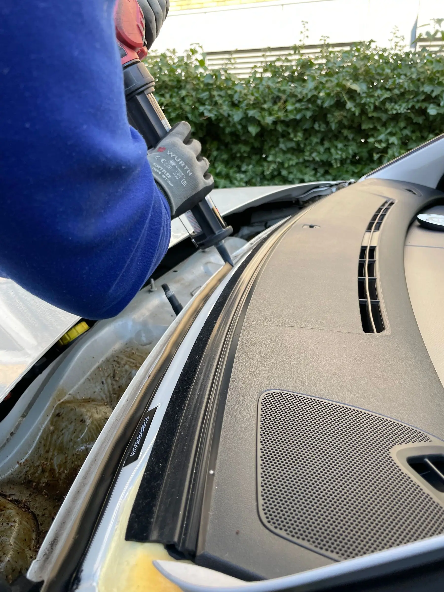
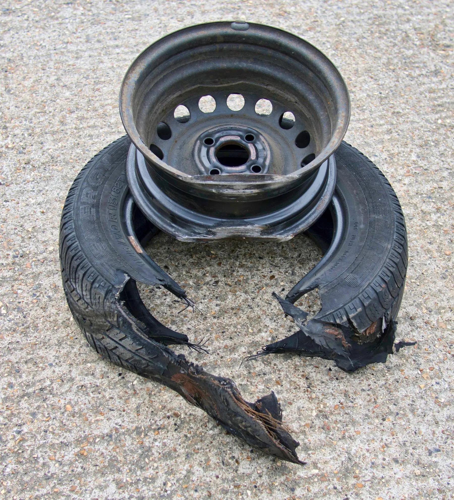
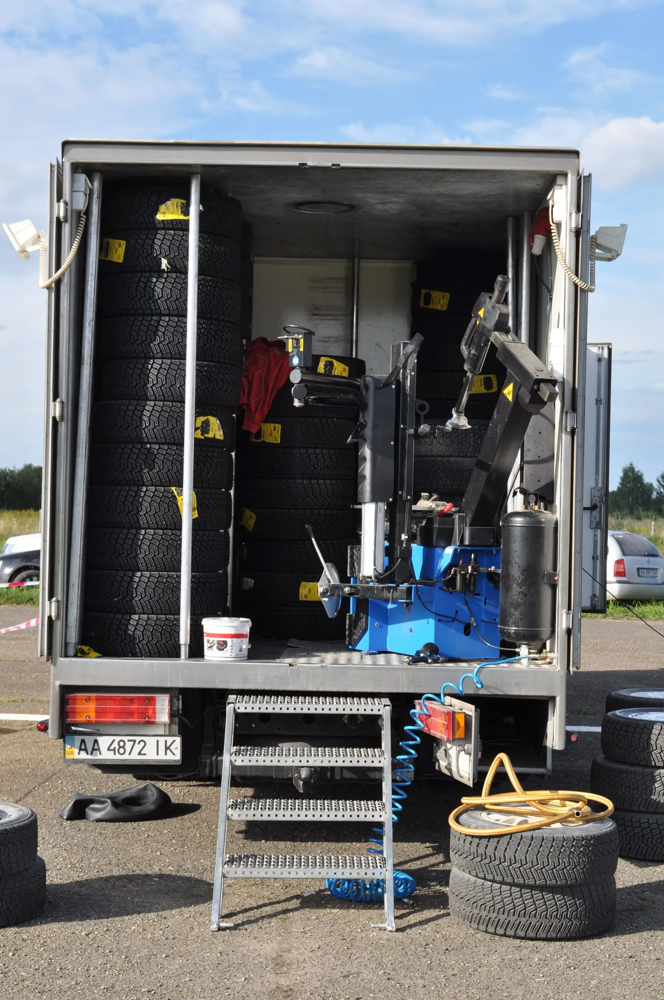
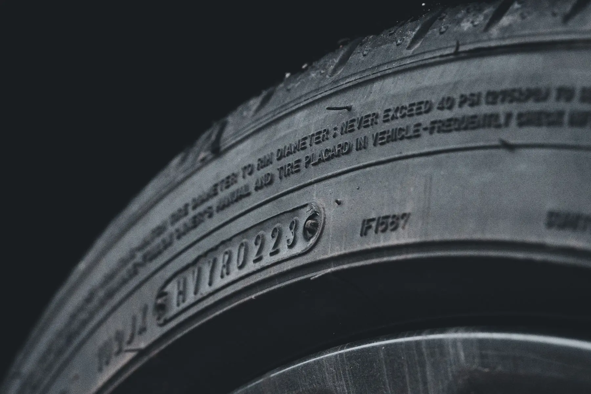

NEW & USED TIRES
NEW & USED TIRESNew & Used Tires
Request current New or Used Tire options by size, quantity and preferred shop before you make the trip.
EXPLORE TIRES →CHARLOTTE + CONCORD · TIRES · REPAIR · ROADSIDE
Tires 4 Less operates three shops in Charlotte and Concord. Freedom Drive is open 24/7. North Tryon is open Mon–Thu 7:30 AM–9:00 PM and Fri–Sun until midnight. Concord is open 7:30 AM–9:00 PM daily. Customers can request tires, tire service, mechanic work, Auto Glass and other shop services, while 24/7 Roadside Assistance uses (980) 319-0381.
WHAT WE DO
NEW & USED TIRESRequest current New or Used Tire options by size, quantity and preferred shop before you make the trip.
EXPLORE TIRES → INSTALLATION, ROTATION, BALANCING & TPMS
INSTALLATION, ROTATION, BALANCING & TPMSTire installation, rotation, balancing, flat repair and TPMS service through the shop-service path.
VIEW TIRE SERVICES →Wheel Alignment is currently available at Freedom Drive only.
VIEW ALIGNMENT → MECHANIC SERVICES
MECHANIC SERVICESBrakes, oil changes, battery, suspension, steering, shocks and struts.
VIEW MECHANIC SERVICES →
WINDSHIELD & AUTO GLASSWindshield replacement and chip repair with In-Shop or Mobile request routing.
VIEW AUTO GLASS →
RIM REPAIRStart with the vehicle, wheel details and damage so the shop can confirm the right Rim Repair path.
VIEW RIM REPAIR → COMMERCIAL TIRE SERVICE
COMMERCIAL TIRE SERVICEFleet, semi, box-truck and commercial tire requests by vehicle, tire size and quantity.
VIEW COMMERCIAL →
ROADSIDE ASSISTANCE24/7 fuel delivery, tire help, mobile tire installation, jump starts and lockouts.
VIEW ROADSIDE →Use Towing when the vehicle cannot continue safely and needs transport.
VIEW TOWING →PAYMENT OPTIONS
Review the available third-party options, then submit a separate Tires 4 Less request so the shop can confirm the actual tires, service and appointment details.
VIEW FINANCING OPTIONS →WHAT WE DO
Choose the service that matches the problem, then follow the page to the correct tire, shop, Roadside or Towing next step.
TIRE VALUE
Check available used-tire options by size and preferred location.
VIEW USED TIRES →PREMIUM / NEW
Find the right size, compare current options and coordinate installation.
VIEW NEW TIRES →FLAT / LEAK
Nails, leaks or pressure loss? Start with an inspection and next-step recommendation.
VIEW TIRE REPAIR →MECHANICAL
Brakes, oil, general mechanic work and truck support where confirmed.
VIEW AUTO / TRUCK REPAIR →PRECISION
Bent, cracked or damaged rims — evaluate repair vs replacement.
VIEW RIM REPAIR →HEAVY DUTY
Commercial tire inquiries for semi, box-truck and other work vehicles.
VIEW COMMERCIAL TIRES →24-HOUR HELP
Roadside tire help is available 24 hours. Optional services remain confirmation-controlled.
VIEW 24-HOUR ROADSIDE →RECOVERY
Can’t safely continue? Move into the towing path and get the vehicle transported.
VIEW TOWING →TWO WAYS TO START
IN-SHOP SERVICE
Freedom Drive, North Tryon or Concord.
VIEW ALL LOCATIONS →24-HOUR MOBILE HELP
24-hour Roadside Assistance · (980) 319-0381.
VIEW ROADSIDE HELP → CALL 24-HOUR ROADSIDE · (980) 319-0381 →HOW TO START
You don’t need to understand the whole repair before contacting the shop. Start with the problem.
Need a tire, shop service, roadside help or towing?
Tire size, vehicle, preferred location, or current roadside location.
Directions, a service request, tire availability confirmation or emergency routing.
LOCAL SERVICE
Freedom Drive is open 24/7. North Tryon is open Mon–Thu 7:30 AM–9:00 PM and Fri–Sun until midnight. Concord is open 7:30 AM–9:00 PM daily. Use the location cards for direct phones, directions and branch-specific service notes; Wheel Alignment is currently available at Freedom Drive only.
CHARLOTTE
1627 Freedom Drive
Charlotte, NC 28208
CHARLOTTE
1010 N Tryon St
Charlotte, NC 28206
CONCORD
241 Cabarrus Ave W
Concord, NC 28025
ROAD NOTES
Read practical Tire Buying, Tire Care and Roadside guides, then move into the service path when you are ready.

TIRE SIDEWALL / SIZE CODEA tire-size string is a starting point for a Tire Availability request. Use the size shown on the tire or send the vehicle year, make and model if you are unsure.
Compare the service paths, then use the request or phone option that matches what the vehicle needs.
READ ROAD NOTE → NEW VS. USED TIRE CONDITION
NEW VS. USED TIRE CONDITIONThe right choice depends on tire size, current availability, vehicle needs and budget. Tires 4 Less keeps New and Used Tire requests separate so the shop can confirm the actual options.
Practical tire and service guidance that helps drivers understand the next step before they request service.
READ ROAD NOTE →Balancing and Alignment are different services. Balancing addresses the tire-and-wheel assembly; Wheel Alignment addresses wheel angles and is currently offered at Freedom Drive only.
Practical next steps and when Roadside vs. Towing is the right path.
READ ROAD NOTE →COMMON QUESTIONS
Quick answers about Home, based on the current Tires 4 Less service and location rules.
CONTACT TIRES 4 LESS →There are three physical shops: Freedom Drive and North Tryon in Charlotte, plus Concord on Cabarrus Ave W.
Freedom Drive is open 24/7. North Tryon is open Mon–Thu 7:30 AM–9:00 PM and Fri–Sun until midnight. Concord is open 7:30 AM–9:00 PM every day.
Yes. 24/7 Roadside Assistance uses (980) 319-0381 and is separate from physical shop hours.
No. Wheel Alignment is currently offered at Freedom Drive only.
No. A Tire Availability form starts a request; the shop confirms actual options before you make the trip.
READY WHEN YOU ARE
Use Tire Availability for tire options, Shop Service for planned in-shop work, Auto Glass for glass requests, and the dedicated Roadside/Towing paths for urgent mobile help. A requested date/time is not confirmed until the shop responds.